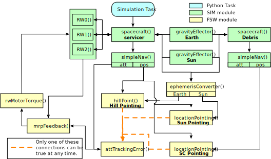
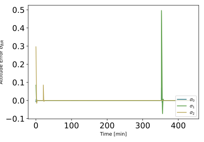
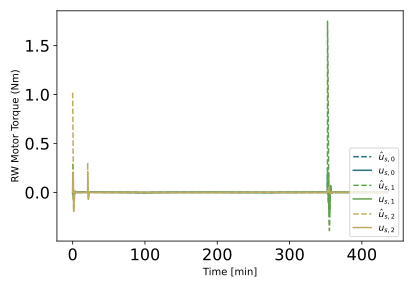
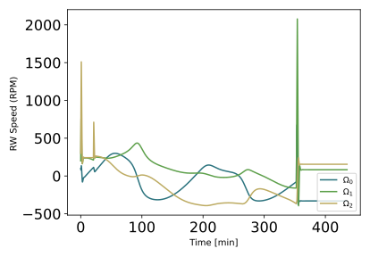

scenarioRendezVous¶
Overview¶
This scenario simulates two space objects, and active servicer approach another defund debris satellite. The servicer spacecraft begin on a drifting approach trajectory after which it perfoms a drifting safety-ellipse to circumnavigate the debris, and finally parks in a 2:1 bounded ellipse.
The script illustrates how the simulation can be run for fixed periods of time after which some flight software modules change their input subscript to switch between the three possible attitude pointing modes 1) Hill pointing, 2) spacecraft point at the debris object and 3) sun pointing of the solar panels.
To do relative motion maneuvers, methods are used to change the instantaneous relative velocity.
The script is found in the folder basilisk/examples and executed by using:
python3 scenarioRendezVous.py
The simulation layout is shown in the following illustration. A single simulation process is created which contains both the servicer spacecraft and associated the Flight Software (FSW) algorithm modules, as well as the debris object.
When the simulation completes several plots are shown for the servicer MRP attitude history, the rate tracking errors, the RW motor torque components, as well as the RW wheel speeds.
The simulation starts with the spacecraft entering Hill frame pointing in a along-track drift mode for 1/8th of an orbit. Next, the logo side of the spacecraft is aimed at the debris object for 2 orbits. Here a maneuver is performed to create a drifting circumnavigation. Finally, the spacecraft points the solar panels at the sun for 1/2 of an orbit.
Illustration of Simulation Results¶
show_plots = True
Note that in the RW motor torque plot both the required control torque \(\hat u_B\) and the true motor torque \(u_B\) are shown. This illustrates that with this maneuver the RW devices are being saturated, and the attitude still eventually stabilizes.
- scenarioRendezVous.plot_rate_error(timeData, dataOmegaBR)[source]¶
Plot the body angular velocity rate tracking errors.
- scenarioRendezVous.plot_rw_cmd_torque(timeData, dataUsReq, numRW)[source]¶
Plot the RW command torques.